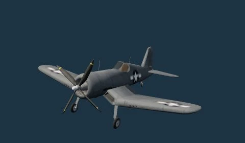
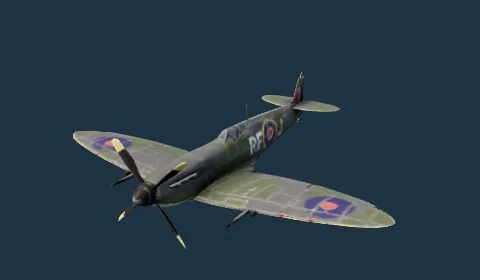
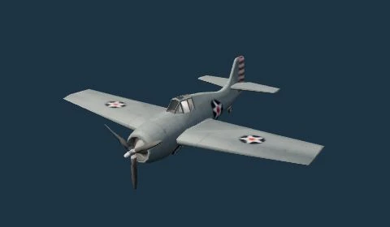
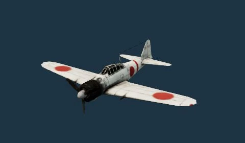

决胜太平洋
正在准备飞机与海域，请稍候。




按住开火自动瞄准 · 摇杆 / 滑动可手动接管
夺取制空权按住左键 / F 持续射击，停下鼠标自动跟随前方敌机；移动鼠标手动接管，Q/E 滚转，R 桶滚躲闪。
突破防空网俯冲接近敌舰，让投弹圆环落在甲板，按空格 / B 或点击投弹按钮后拉升。
返航再出击靠近友方航母、低速平飞，修复机体并补充炸弹。
街机自定义阵容 · 模型图片与游戏内外观一致
按住开火，自动跟随前方敌机并计算提前量；击落后自动寻找下一个目标。转向、滑动或转动手机可手动接管，停止操作后恢复辅助。机炮可持续射击，关闭辅助可纯手动瞄准。
点击“播放测试音”开启或恢复声音。
等待声音检测
陀螺仪已关闭
开启后，轻轻转动手机微调机头；摇杆和滑动瞄准仍可使用。
尚未启用